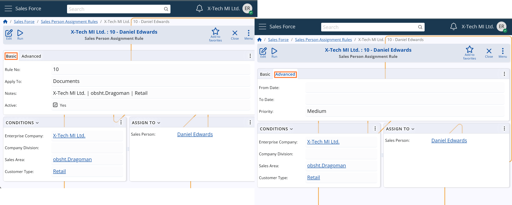

Rule settings
Sales Person Assignment Rules are used to automatically assign a sales person to customers, leads, or sales-related documents, based on selected criteria. This topic explains the available configuration options for each rule.
Rule availability
Each rule can be enabled or disabled and limited to a specific period:
Active
Indicates whether the rule is active. Only active rules are considered during assignment.From Date / To Date
Optional date range in which the rule is valid.- If empty, the rule is always valid.
- If both dates are set, the system applies the rule only within that range.
- If only one date is set, the rule is considered valid from or until that date.
Rule triggers
The rule is evaluated when the following fields from the relevant customer, lead, or sales document match the values specified in the rule:
Enterprise Company
Must match the Enterprise Company of the record to which the rule is being applied. (This field is mandatory.)Company Division, Sales Area, Customer Type
Optional filters. If filled, the value must be the same as in the relevant customer, lead, or document. If left empty, the rule will match any value for that field.
The more filters you set, the more specific the rule becomes. A rule with empty fields is more generic and may match a wider range of cases.
Assignment target
Apply To
Defines what the rule applies to:- Customers: includes both Customers and Leads.
- Documents: includes Offers, Sales Orders, and Opportunities.
Sales Person
The sales person to whom the customer/document should be assigned.
Conflict resolution
When multiple rules match a given scenario, the system uses the following criteria to choose the most appropriate one:
Priority
Select from: Highest, High, Medium, Low, Lowest.
Rules with higher priority are preferred over lower-priority ones.Rule No
A unique number assigned to each rule.- Used as a tie-breaker when two or more rules share the same priority.
- The rule with the higher number will be used.
Tip: You can manually edit Rule No to control the order in which rules are evaluated.
